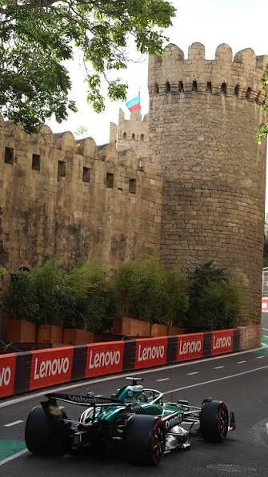
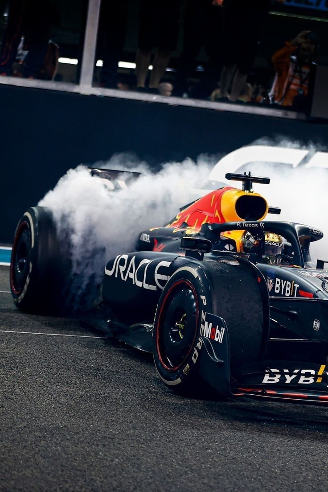

10 İL, 10 QRAN PRİ: BAKI FORMULA 1 TARİXİNDƏ ÖZ İZİNİ NECƏ QOYDU?
Azərbaycan Formula 1 üzrə 10-cu Qran Priyə ev sahibliyi etməyə hazırlaşır. 2016-cı ildə Avropa Qran-Prisi ilə başlayan Bakı mərhələsi ötən illər ərzində gözlənilməz qələbələr, maraqlı mübarizələr, rekordlar və Formula 1 tarixində iz qoyan hadisələrlə yadda qalıb. Yubiley yarışı ərəfəsində Bakı şəhər halqasının əvvəlki doqquz yarışında baş verən ən diqqətçəkən məqamlara nəzər salaq.

Bakı şəhər halqası Formula 1-in ən mürəkkəb və maraqlı şəhər treklərindən biridir Məhz Bakı şəhər halqasının özünəməxsus xüsusiyyətləri Azərbaycan Qran-Prisini mövsümün maraqlı mərhələlərindən birinə çevirir. Paytaxtın mərkəzi küçələrindən keçən trek yüksək sürətli uzun düzlükləri texniki cəhətdən mürəkkəb döngələrlə birləşdirir.
Trekin ən diqqətçəkən hissələrindən biri İçərişəhərin qala divarları boyunca uzanan dar sahədir. Trekin ən dar nöqtəsində, 8 və 9-cu döngələrin yerləşdiyi hissənin eni cəmi 7,6 metrdir. Bu isə pilotlardan maksimum dəqiqlik tələb edir. Digər tərəfdən, uzun start-finiş düzlüyü yüksək sürət və ötmə manevrləri üçün əlverişli imkan yaradır.
Bu xüsusiyyətlərin birləşməsi Bakıdakı yarışları gözlənilməz nəticələri ilə fərqləndirir.
2016: Bakıda Formula 1 tarixinin ilk səhifəsi Avropa Qran-Prisi adı altında keçirilən ilk Bakı yarışının qalibi “Mercedes” pilotu Niko Rosberq oldu. Almaniyalı pilot həmin mövsümün sonunda karyerasında ilk dünya çempionluğunu qazandı. Rosberq çempionluqdan qısa müddət sonra peşəkar karyerasını başa vurduğunu açıqladı.
2017: Bakı trekində xaos və möhtəşəm geridönüş 2017-ci il Azərbaycan Qran-Prisi dramatik hadisələrlə yadda qaldı. Sebastyan Fettel və Lyuis Hemilton arasında yaşanan insident, yarışın bir neçə dəfə təhlükəsizlik avtomobili rejimində davam etməsi və qırmızı bayraqla dayandırılması Bakıdakı mübarizəni mövsümün ən çox müzakirə olunan yarışlarından birinə çevirdi.
Yarışa onuncu pillədən başlayan “Red Bull” pilotu Daniel Rikkardo sonda qələbə qazandı. Valtteri Bottas ikinci, Williams pilotu Lens Stroll isə üçüncü oldu.
2018: Son anda qalibi dəyişən hadisələr Yarışın diqqət mərkəzində “Red Bull” komandasının pilotları Maks Ferstappen və Daniel Rikkardo arasında baş verən toqquşma oldu. Hadisə nəticəsində hər iki pilot yarışı başa vura bilmədi.
Əsas drama isə finişə bir neçə dövrə qalmış yaşandı. Yarışa liderlik edən Valtteri Bottas təkərinin sıradan çıxması nəticəsində mübarizədən kənarda qaldı. Nəticədə liderliyə yüksələn Lyuis Hemilton yarışı birinci pillədə başa vuraraq qələbə qazandı.
2019: “Mercedes”in zəfəri, Leklerin səhvi Valtteri Bottasın qələbəsi və Lyuis Hemiltonun ikinci yeri tutması ilə “Mercedes” Azərbaycan Qran Prisində ilk iki yeri tutdu.
Sıralama turu isə Şarl Leklerin qəzası ilə yadda qaldı. “Ferrari” pilotu İçərişəhər tərəfdə yerləşən 8-ci döngədə idarəetməni itirərək təhlükəsizlik səddinə çırpıldı.

2021: İki əsas favoritin mübarizədən kənarda qalması 2021-ci il Azərbaycan Qran-Prisi Bakı mərhələsinin tarixində ən dramatik sonluqlardan biri ilə yadda qaldı. Finişə beş dövrə qalmış yarışa liderlik edən Maks Ferstappen təkərinin sıradan çıxması nəticəsində mübarizəni dayandırdı.
Yarışın qırmızı bayraqdan sonra yenidən başlaması ilə liderlik şansı Lyuis Hemiltona keçdi. Lakin britaniyalı pilot yenidən start zamanı “Brake Magic” (əyləc balansı) funksiyasını aktivləşdirərək söndürməyi unudub. Əyləc balansının ön təkərlərə yönəlməsi onun birinci döngədə trekdən çıxmasına səbəb olub.
Ferstappenin mübarizədən kənarda qalması və Hemiltonun səhvi nəticəsində qələbəni “Red Bull” pilotu Serxio Peres qazandı.
2022: “Red Bull” üçün tarixi dubl “Ferrari” pilotları Şarl Lekler və Karlos Sayns texniki problemlər səbəbindən mübarizəni dayandırdıqdan sonra qələbəni Maks Ferstappen qazandı. Bu niderlandlı pilotun Bakı şəhər halqasındakı ilk qələbəsi oldu.
Serxio Peres ikinci yeri tutaraq “Red Bull”a Azərbaycan Qran Prisində ilk dublunu qazandırdı.
2023: “Bakı trekinin kralı” Serxio Peres 2023-cü il Azərbaycan Qran-Prisi sprint yarışının da keçirildiyi yeni həftəsonu formatında baş tutdu. Serxio Peres həm sprint yarışında, həm də əsas Qran Pridə qalib gəldi. Bakıda əldə etdiyi ikinci qələbədən sonra Peres Formula 1 azarkeşləri arasında qeyri-rəsmi olaraq “Bakı trekinin kralı” ləqəbini qazanıb.
2024: Piastri və Leklerin dueli Azərbaycan Qran-Prisinin qalibi “McLaren” komandasının pilotu Oskar Piastri oldu. Şarl Lekleri ötməklə liderliyə yüksələn avstraliyalı pilot finişədək birinci mövqeyini qorudu.Yarışın son dövrələri isə dramatik hadisə ilə yadda qaldı. Finişə az qalmış Serxio Peres və Karlos Sayns üçüncü yer uğrunda mübarizə zamanı toqquşdular. Nəticədə hər iki pilot yarışı başa vura bilmədi.
2025: Altı qırmızı bayraq və gözlənilməz podium 2025-ci ildə Azərbaycan Qran-Prisinin qalibi “Red Bull” komandasının pilotu Maks Ferstappen oldu. Niderlandlı pilot yarış boyu liderliyi qoruyaraq finişə birinci çatdı. Corc Rassell ikinci, Karlos Sayns isə üçüncü oldu. Sayns “Williams” komandası ilə ilk podiumunu Bakıda qazandı. Yarış həftəsonunun ən diqqətçəkən hadisələrindən biri isə altı dəfə qırmızı bayraqla dayandırılan sıralama turu olub. Bu göstərici Formula 1 tarixində yeni rekord kimi qeydə alınıb.


